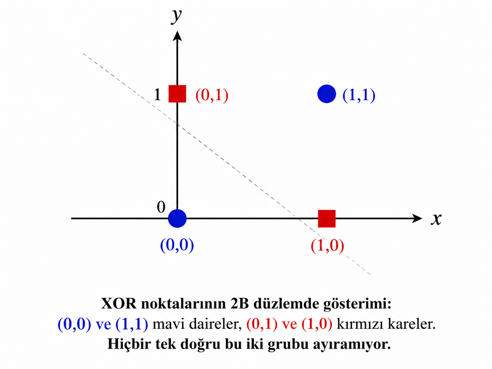

1. Tek nöronun sınırını anlamak: XOR problemi ve bir alanın krizi
Bir önceki haftada perceptronun mantığını, öğrenme kuralını ve geometrik yorumunu ayrıntılı biçimde ele aldık. Perceptron, veriden öğrenebilen ilk sistematik modeldi. Fakat Minsky ve Papert, 1969'da yayımladıkları Perceptrons kitabında bu modelin temel bir kısıtını çarpıcı biçimde ortaya koydu: tek katmanlı bir perceptron doğrusal olmayan problemleri çözemez.
Bu kısıtı somutlaştırmak için en sık kullanılan örnek XOR problemidir. XOR (exclusive-or, dışlayan ya da) mantık kapısı, iki girişten tam olarak biri 1 olduğunda 1 üretir, her ikisi aynı olduğunda ise 0 üretir.
XOR doğruluk tablosu
| x₁ | x₂ | y |
|---|---|---|
| 0 | 0 | 0 |
| 0 | 1 | 1 |
| 1 | 0 | 1 |
| 1 | 1 | 0 |
Geometrik açıklama
Düzlemde bu dört noktayı çizdiğinizde, pozitif örnekler (1,0) ve (0,1), negatif örnekler ise (0,0) ve (1,1)'dir. Bu iki grubu tek bir düz çizgiyle ayırmak imkânsızdır. Perceptron bu yüzden XOR'u çözemez.

1.1. Problem doğrusal olmayan bir karar sınırı gerektiriyor
AND ve OR problemleri doğrusal olarak ayrılabilir olduğundan perceptron onları çözebilir. XOR ise iki doğrusal bölge gerektiriyor: bir tarafta (0,0) ve (1,1), diğer tarafta (0,1) ve (1,0). Başka bir deyişle düzlemdeki ayrım eğri ya da parçalı olmalı. Tek bir perceptron, tek bir hiperdüzlem koyabildiğinden bu iş için temelden yetersiz kalır.
Gerçek dünya problemlerinin büyük çoğunluğu doğrusal olarak ayrılabilir değildir. Bir görüntüdeki nesneyi tanımak, hastalık teşhisi koymak, sesi metne dönüştürmek — bunların hepsi son derece karmaşık ve doğrusal olmayan karar sınırları gerektirir. Perceptron bütün bu problemler için yetersizdir. Minsky'nin kitabı bu gerçeği ispatladı ve "yapay zekâ kışı" denen 1970'lerin araştırma duraklama dönemini tetikledi.
1.2. Çözüm nerede saklıydı?
Cevap aslında hiç de gizemli değildi: birden fazla perceptronu üst üste ve yan yana koyun. Bir perceptron katmanının çıktısını başka bir perceptron katmanının girdisi yapın. Bu basit fikir, hem XOR problemini çözer hem de çok daha genel bir öğrenme çerçevesi açar.
XOR, iki perceptronun ara katman oluşturduğu bir ağla çözülebilir. Birinci gizli nöron "en az biri 1" mantığını öğrenebilir (OR benzeri), ikinci gizli nöron "her ikisi de 1" mantığını engelleyici biçimde öğrenebilir (NAND benzeri). Bu iki gizli nöronun çıktıları birleştiğinde XOR elde edilir.
2. Multi-Layer Perceptron: Katmanlar, nöronlar ve mimari
Multi-Layer Perceptron (MLP), tek katmanlı perceptronun doğal uzantısıdır. Artık tek bir ağırlıklı toplam ve bir eşik değil; birden çok nörondan oluşan katmanlar, katmanlar arasındaki tam bağlantılar ve her nöron için bir aktivasyon fonksiyonu vardır.
MLP'nin mimarisi üç temel bölümden oluşur: girdi katmanı, bir ya da birden fazla gizli katman ve çıktı katmanı. Her katmandaki her nöron, bir önceki katmandaki her nöronla bağlıdır — bu nedenle bu tür katmanlara tam bağlı (fully connected) ya da lineer katman da denir.
2.1. Katmanlar ve mimari
🔵 Girdi Katmanı
Ham veriyi ağa aktaran katmandır. Nöron sayısı özellik sayısına eşittir. Herhangi bir hesaplama yapmaz; yalnızca veriyi iletir.
🟣 Gizli Katman(lar)
Temsil öğrenmenin gerçekleştiği yerdir. Her nöron, önceki katmandan ağırlıklı toplam alır, bias ekler ve bir aktivasyon fonksiyonu uygular.
🟢 Çıktı Katmanı
Tahmin üretir. İkili sınıflandırma için 1 nöron + sigmoid, çok sınıflı için C nöron + softmax, regresyon için 1 nöron (aktivasyonsuz) kullanılır.
Klasik MLP mimarisi şeması: 4 girdi nöronu → 6 gizli nöron → 4 gizli nöron → 2 çıktı nöronu. Her bağlantıda bir ağırlık ok üstünde gösterilmeli. Nöron içinde "∑ + aktivasyon" simgeleri yer almalı.
Her katmandaki hesaplama
Bir katmandaki her nöron şu hesabı yapar:
Burada wᵢⱼ bir önceki katmanın i. nöronundan bu katmanın j. nöronuna gelen ağırlık, bⱼ bias, z net girdi ve f aktivasyon fonksiyonudur. Elde edilen aⱼ aktivasyonu bir sonraki katmana girdi olur.
Matris formunda ifade
Tek nöron bazlı hesap yerine tüm katmanı vektörel biçimde yazmak hem daha verimlidir hem de PyTorch'un kullandığı gösterime doğrudan karşılık gelir:
a = f(z)
Burada W ağırlık matrisi (şekil: çıktı_boyutu × girdi_boyutu), x girdi vektörü,
b bias vektörüdür. PyTorch'taki nn.Linear tam olarak bu matris çarpımını yapar.
2.2. Aktivasyon fonksiyonları: Doğrusal olmayan ifade gücü
Aktivasyon fonksiyonları, MLP'yi perceptrondan kavramsal olarak ayıran en önemli unsurdur. Aktivasyon olmadan kaç katman eklersek ekleyelim sonuç yine doğrusal bir fonksiyon olur — çünkü matris çarpımlarının bileşimi yine bir matris çarpımıdır. Aktivasyon fonksiyonu, bu doğrusallığı kırarak ağa gerçek anlamda karmaşık fonksiyonlar öğrenme kapasitesi kazandırır.
| Fonksiyon | Formül | Aralık | Avantaj | Dezavantaj | Ne zaman kullanılır |
|---|---|---|---|---|---|
| Sigmoid | σ(x) = 1 / (1 + e⁻ˣ) | (0, 1) | Olasılık yorumu kolay; çıktı (0,1) arası | Derin ağlarda vanishing gradient sorunu; hesaplama maliyeti | İkili sınıflandırma çıkışı |
| Tanh | tanh(x) = (eˣ - e⁻ˣ) / (eˣ + e⁻ˣ) | (-1, 1) | Ortalama sıfıra yakın; sigmoid'den güçlü gradyan | Yine de vanishing gradient riski var | Gizli katmanlar (özellikle RNN) |
| ReLU | max(0, x) | [0, +∞) | Çok hızlı; derin ağlarda iyi gradyan akışı; hesaplama basit | Dying ReLU: x<0 bölgede gradyan sıfır, nöron ölüyor | Derin ağların gizli katmanları (varsayılan tercih) |
| Leaky ReLU | max(0.01x, x) | (-∞, +∞) | Ölü nöron sorununu azaltır | Ek hiperparametre (negatif eğim) | ReLU'nun başarısız olduğu senaryolar |
| ELU | x ≥ 0: x; x < 0: α(eˣ-1) | (-α, +∞) | Negatif değerler aktive; daha iyi eğitim kararlılığı | Üstel hesaplama | Derin ağlar, daha iyi yakınsama istendiğinde |
| Softmax | eˣⁱ / Σⱼ eˣʲ | (0, 1), toplam = 1 | Çok sınıflı olasılık dağılımı üretir | Sayısal kararsızlık riski (büyük değerlerde) | Çok sınıflı sınıflandırma çıkışı |
| GELU | x · Φ(x) | (-∞, +∞) | Stokastik düzgünlük; Transformer'larda başarılı | Hesaplama maliyeti | Transformer, BERT, GPT |
| Swish | x · σ(x) | (-∞, +∞) | Düzgün türev; derin ağlarda ReLU'dan iyi | Daha fazla hesaplama | EfficientNet ve benzer modern mimariler |
Sekiz aktivasyon fonksiyonunun -4 ile +4 arasındaki grafiği, her biri farklı renkte, aynı eksende karşılaştırmalı olarak gösterilmeli.
Vanishing gradient sorunu sezgisi
Sigmoid ve tanh fonksiyonlarının türevi, fonksiyon değeri 0'a ya da uç değerlere yaklaştığında sıfıra yaklaşır. Geri yayılım sırasında bu küçük türevler çarpıla çarpıla katmandan katmana aktarılırken giderek küçülür. 10-20 katmanlı bir ağda en derin gizli katmanlara ulaşan gradyan neredeyse sıfır olabilir. Bu durumda o katmanların ağırlıkları hiç güncellenmez; öğrenme fiilen durur. ReLU bu sorunu dramatik biçimde azaltır çünkü pozitif bölgede türevi her zaman 1'dir.
2.3. Evrensel yaklaşım teoremi
"Bir gizli katmana ve yeterli sayıda nörona sahip bir yapay sinir ağı, kompakt bir uzaydaki herhangi sürekli bir fonksiyonu istenilen hassasiyette yaklaşık olarak temsil edebilir."
— Cybenko, 1989; Hornik, 1991
Bu teorem son derece güçlü bir teorik güvence sağlar. Ancak birkaç önemli nüansı vardır:
- Varlık garantisi verir, öğrenme garantisi vermez. Teorik olarak yeterli nöron varsa ağ o fonksiyonu temsil edebilir, ama bunu veriden öğrenip öğrenemeyeceği ayrı bir sorudur.
- Yeterli sayıda nöron bazen astronomik olabilir. Bir katmanla her şeyi öğrenmek, pratikte mümkün olmayan büyüklüklerde ağ gerektirebilir.
- Derin ağlar aynı kapasiteyi çok daha verimli kullanır. Derin (çok katmanlı) ağların tek katmanlı ama geniş ağlara karşı avantajı budur: hiyerarşik özellik öğrenimi sayesinde parametreleri çok daha verimli kullanırlar.
3. İleri besleme: Bir veri örneği ağdan nasıl geçer?
İleri besleme (forward pass), bir girdi verisinin ağın katmanları boyunca, girdi katmanından çıktı katmanına doğru ilerlemesidir. Her katmanda ağırlıklı toplam ve aktivasyon hesapları yapılır. Sonunda bir tahmin üretilir.
Bunu somut bir örnekle izleyelim. Diyelim ki 3 girdi özelliği olan, 1 gizli katman (4 nöron, ReLU), 1 çıktı nöronu (sigmoid) olan bir ağ tasarlıyoruz. İkili sınıflandırma yapacak.
x ∈ ℝ³
Lineer dönüşüm
Aktivasyon
Lineer dönüşüm
Sigmoid çıkış
Tahmin
3.1. Nümerik örnek
Diyelim ki girdi vektörümüz x = [2.0, -1.0, 0.5] olsun. İlk gizli katmanın ağırlık matrisini ve bias vektörünü basitleştirmek için elle tanımlayalım.
ReLU(z₁) = max(0, z₁) → a₁
Katman 2 (4→1): z₂ = W₂ · a₁ + b₂
ŷ = σ(z₂) = 1 / (1 + e⁻z₂)
Eğer bu hesaplamanın sonunda ŷ = 0.73 çıktıysa ve gerçek etiket y = 1 ise, ikili çapraz entropi kaybı şu şekilde hesaplanır:
L = −[1 · log(0.73) + 0 · log(0.27)]
L = −log(0.73) ≈ 0.315
3.2. Toplu işlem (batch processing)
Pratikte tek bir örnek değil, aynı anda birden fazla örnek ağdan geçirilir. Bu durumda girdi artık bir matristir: X ∈ ℝN×D, burada N batch boyutu, D özellik sayısıdır. Matris çarpımı sayesinde N örneğin tamamı tek bir işlemde hesaplanır. Bu, GPU'ların neden bu kadar etkili olduğunu açıklar: GPU'lar büyük matris çarpımlarında masaüstü CPU'lardan binlerce kat daha hızlıdır.
4. Geri yayılım algoritması: Hatanın kaynağını bulmak
İleri besleme ağa bir tahmin ürettirir; geri yayılım ise bu tahmin ile gerçek değer arasındaki kaybın her ağırlığa göre gradyanını hesaplar. Bu gradyanlar, ağırlıkları doğru yönde güncellemek için kullanılır.
Geri yayılım, zincir kuralı üzerine inşa edilmiş bir türev hesaplama algoritmasıdır. 1986'da Rumelhart, Hinton ve Williams tarafından çok katmanlı ağlara uygulanabilir hâle getirilmiş ve derin öğrenmenin kapılarını açan en önemli teknik katkılardan biri olmuştur.
4.1. Gradyan ve zincir kuralı
Amacımız kayıp fonksiyonunun L'yi, ağdaki her ağırlık w'ya göre türevini hesaplamaktır:
Sorun şudur: kayıp, çıktı nöronuna bağlı; çıktı nöronu son gizli katmana; son gizli katman öncekine, ve böyle devam eder. Yani kayıp ile ağırlık arasında bir fonksiyon bileşimi zinciri vardır. Zincir kuralı, bileşik bir fonksiyonun türevini parçalara ayırarak hesaplar:
Bu ifade üç terimin çarpımıdır. Her bir terim hesaplandıktan sonra çarpılır. Derin ağlarda bu zincir çok daha uzun olur; ancak mantık aynıdır: çıktıdan girişe doğru, her katmanda lokal türev hesaplanır ve önceki katmana iletilir.
4.2. Hesaplama grafı
PyTorch otomatik türev (autograd) mekanizmasını hesaplama grafı üzerinden çalıştırır.
İleri besleme sırasında her işlem kaydedilir; loss.backward() çağrıldığında
bu grafta geriye doğru zincir kuralı uygulanarak her parametrenin gradyanı otomatik hesaplanır.
requires_grad=True olan tensorlar üzerinde yapılan tüm işlemler bir hesaplama grafı oluşturur.
loss.backward() bu grafı geriye doğru tarar ve her parametrenin .grad alanını doldurur.
Optimizer daha sonra bu gradyanları kullanarak parametreleri günceller.
4.3. Ağırlık güncelleme kuralı
Gradyanlar hesaplandıktan sonra optimizasyon algoritması devreye girer. En temel form olan gradient descent (gradyan inişi) şu güncelleme kuralını kullanır:
Burada η öğrenme oranıdır (learning rate). Eğer gradyan pozitifse kayıp o ağırlık arttıkça artıyor demektir, bu yüzden ağırlığı azaltırız. Negatifse ağırlığı artırırız. Bu şekilde kayıp fonksiyonu her adımda biraz daha küçülmeye çalışır.
İyimser senaryo
Gradyan inişi, kayıp yüzeyinin pürüzsüz bir kase şeklinde olduğu durumlarda her zaman global minimuma ulaşır.
Gerçek senaryo
Gerçek ağlarda kayıp yüzeyi çok karmaşıktır: yerel minimumlar, eyer noktaları, düz bölgeler vardır. Modern optimizasyon yöntemleri bu zorluklarla başa çıkmak için geliştirilmiştir.
Kayıp yüzeyi (loss surface) 3D çizimi: iki ağırlık parametresi ekseninde L değeri. Gradient descent yolunun birkaç adımı görünmeli. Yerel minimum, global minimum ve eyer noktası işaretlenmeli.
5. Kayıp fonksiyonları: Hatayı nasıl ölçeriz?
Kayıp fonksiyonu (loss function) ya da maliyet fonksiyonu (cost function), modelin tahminlerinin gerçek değerlerden ne kadar uzak olduğunu sayısal bir skala üzerinde ifade eder. Geri yayılımın başladığı yer burasıdır. Doğru kayıp fonksiyonunu seçmek, hem öğrenmenin yönünü hem de sonucun kalitesini doğrudan etkiler.
| Kayıp Fonksiyonu | Formül | Kullanım Alanı | PyTorch Karşılığı |
|---|---|---|---|
| Ortalama Kare Hatası (MSE) | L = (1/N) Σ (yᵢ − ŷᵢ)² | Regresyon problemleri | nn.MSELoss() |
| Ortalama Mutlak Hata (MAE) | L = (1/N) Σ |yᵢ − ŷᵢ| | Regresyon, aykırı değerlere dayanıklı | nn.L1Loss() |
| İkili Çapraz Entropi (BCE) | L = −Σ [y·log(ŷ) + (1−y)·log(1−ŷ)] | İkili sınıflandırma | nn.BCELoss() veya BCEWithLogitsLoss() |
| Kategorik Çapraz Entropi (CCE) | L = −Σ yₖ · log(ŷₖ) | Çok sınıflı sınıflandırma | nn.CrossEntropyLoss() |
| Huber Loss | Küçük hatada MSE, büyük hatada MAE davranışı | Aykırı değer toleranslı regresyon | nn.HuberLoss() |
| KL Divergence | L = Σ p(x) · log[p(x)/q(x)] | Olasılık dağılımları arası fark; VAE | nn.KLDivLoss() |
MSE kullanıldığında sigmoid çıkışlı modelde gradyan, tahmin uç değerlere (0 veya 1) yaklaştığında son derece küçülür (sigmoid'in türevinin düz bölgeleri). Bu, öğrenmeyi yavaşlatır. Çapraz entropi, log fonksiyonu sayesinde yanlış tahminlerde çok büyük kayıp üretir ve gradyan akışı güçlü kalır.
5.1. Çapraz entropinin sezgisi
Çapraz entropi, bilgi teorisinden gelir. Eğer gerçek dağılım p ve model dağılımı q ise, çapraz entropi iki dağılım arasındaki "şaşkınlık" ölçüsüdür. Model doğru sınıf için yüksek olasılık ürettiyse kayıp küçüktür. Model yanlış sınıf için yüksek olasılık ürettiyse kayıp çok büyük olur.
Gerçek: y = [0, 1, 0] (sınıf 2 doğru)
L = −log(0.90) ≈ 0.105 ← düşük kayıp, iyi tahmin
Tahmin: ŷ = [0.05, 0.10, 0.85] (yanlış sınıf 3)
Gerçek: y = [0, 1, 0]
L = −log(0.10) ≈ 2.302 ← yüksek kayıp, kötü tahmin
6. Optimizasyon algoritmaları: Gradyanı nasıl kullanalım?
Gradyanlar hesaplandıktan sonra parametreleri bu gradyanlara göre nasıl güncelleyeceğimize karar vermek için bir optimizasyon algoritması kullanırız. Saf gradient descent, büyük ölçekli problemlerde pratikte pek iyi çalışmaz. Bunun yerine geliştirilen algoritmalar, eğitimi hem hızlandırır hem de daha kararlı hâle getirir.
6.1. Gradient Descent türleri
Batch Gradient Descent
Tüm veri seti üzerinden ortalama gradyan hesaplanır. Kararlı ama yavaş ve büyük veri için bellek yetersiz.
Her adımda N örnek
Stochastic Gradient Descent (SGD)
Her adımda tek bir örnek üzerinden gradyan hesaplanır. Hızlı ama gürültülü; yerel minimumdan kaçabilir.
Her adımda 1 örnek
Mini-batch SGD
Her adımda küçük bir grup (batch) üzerinden gradyan hesaplanır. Pratik denge: hız + kararlılık.
Her adımda B örnek (tipik: 32–512)
6.2. İleri optimizasyon algoritmaları
| Algoritma | Temel Fikir | Güçlü Yönü | PyTorch |
|---|---|---|---|
| SGD + Momentum | Geçmiş gradyanlardan hız biriktirir, gürültüyü azaltır | Basit, iyi ayarlandığında çok etkin; bazı görevlerde Adam'ı geçer | torch.optim.SGD(momentum=0.9) |
| AdaGrad | Her parametre için ayrı öğrenme oranı; seyrek gradyanlarda iyi | Seyrek veri (NLP) için faydalı | torch.optim.Adagrad() |
| RMSprop | AdaGrad'ın öğrenme oranı küçülme sorununu üs. hareketli ort. ile çözer | RNN ve online öğrenmede etkili | torch.optim.RMSprop() |
| Adam | Momentum + RMSprop birleşimi; birinci ve ikinci moment tahmini | Çoğu görev için en iyi başlangıç seçeneği; hızlı yakınsama | torch.optim.Adam() |
| AdamW | Adam + ağırlık azalması (weight decay) ayrımı | Büyük modellerde genelleme daha iyi; Transformer'larda tercih edilir | torch.optim.AdamW() |
6.3. Learning Rate Scheduling
Sabit bir öğrenme oranı her zaman optimal değildir. Eğitim başında büyük adımlar atmak hızlı yakınsama sağlar; ilerleyen dönemlerde öğrenme oranını küçültmek ince ayar yapılmasına olanak tanır.
| Scheduler | Davranışı | PyTorch |
|---|---|---|
| StepLR | Her N epoch'ta öğrenme oranını γ çarpanıyla azalt | lr_scheduler.StepLR(step_size=10, gamma=0.1) |
| CosineAnnealingLR | Öğrenme oranını kosinüs eğrisine göre sıfıra indir, sonra sıfırla | lr_scheduler.CosineAnnealingLR(T_max=50) |
| ReduceLROnPlateau | Validation kaybı iyileşmediğinde öğrenme oranını azalt | lr_scheduler.ReduceLROnPlateau(patience=5) |
| OneCycleLR | Warm-up + annealing kombinasyonu; süper hızlı eğitim | lr_scheduler.OneCycleLR(max_lr=0.01) |
7. Eğitim terminolojisi: Tam sözlük
Yapay sinir ağı literatüründe sıklıkla karşılaşılan terimler bazen sezgisel olmayan biçimlerde kullanılır. Bu bölüm, her terimi tanımı, formülü (varsa) ve pratik nüansıyla açıklar.
torch.nn.utils.clip_grad_norm_(model.parameters(), max_norm=1.0)Veri boyutu = N = 10.000 örnek
Batch Size = B = 100
Adım sayısı (1 epoch) = N/B = 100 iterasyon
50 epoch → Toplam = 50 × 100 = 5.000 iterasyon
Her iterasyonda 1 kez forward + backward + güncelleme
8. PyTorch ile Yapay Sinir Ağı Oluşturmak
PyTorch, esnekliği ve dinamik hesaplama grafı sayesinde araştırmacılar ve mühendisler tarafından en çok kullanılan derin öğrenme çerçeveleri arasında yer alır. Bu bölümde sıfırdan bir YSA tasarlayacak, eğiteceğiz ve değerlendireceğiz.
8.1. PyTorch temel yapı taşları
torch.Tensor
PyTorch'un temel veri yapısı. NumPy array'e benzer ama GPU üzerinde çalışabilir ve autograd destekler.
nn.Module
Tüm model bileşenlerinin temel sınıfı. Parametreleri otomatik takip eder, forward() metodu zorunludur.
nn.Linear
Tam bağlı katman: y = Wx + b işlemini gerçekleştirir. Girdi ve çıktı boyutları belirtilir.
torch.optim
Optimizasyon algoritmaları (Adam, SGD vb.). optimizer.step() ile parametreler güncellenir.
8.1.1. Model tanımlama
import torch
import torch.nn as nn
import torch.nn.functional as F
class YapaysinirAgi(nn.Module):
"""
Genel amaçlı tam bağlı (fully connected) yapay sinir ağı.
- input_dim : girdi özellik sayısı
- hidden_dims: gizli katman nöron sayılarını tutan liste
- output_dim : çıktı boyutu (sınıf sayısı ya da regresyon çıktısı)
- dropout_p : dropout olasılığı (0 = dropout yok)
"""
def __init__(self, input_dim, hidden_dims, output_dim, dropout_p=0.3):
super(YapaysinirAgi, self).__init__()
katmanlar = []
onceki_dim = input_dim
for gizli_dim in hidden_dims:
katmanlar.append(nn.Linear(onceki_dim, gizli_dim))
katmanlar.append(nn.BatchNorm1d(gizli_dim)) # Batch normalizasyon
katmanlar.append(nn.ReLU()) # Aktivasyon
katmanlar.append(nn.Dropout(p=dropout_p)) # Dropout
onceki_dim = gizli_dim
# Çıktı katmanı — aktivasyonsuz (kayıp fonksiyonu içinde uygulanacak)
katmanlar.append(nn.Linear(onceki_dim, output_dim))
self.ag = nn.Sequential(*katmanlar)
def forward(self, x):
return self.ag(x)
# ─── Kullanım örneği ───
model = YapaysinirAgi(
input_dim=10, # 10 özellik
hidden_dims=[64, 32], # İki gizli katman: 64 ve 32 nöron
output_dim=1, # İkili sınıflandırma için 1 çıktı
dropout_p=0.3
)
print(model)
# → YapaysinirAgi
# (ag): Sequential(
# (0): Linear(in_features=10, out_features=64, bias=True)
# (1): BatchNorm1d(64, ...)
# (2): ReLU()
# (3): Dropout(p=0.3, ...)
# (4): Linear(in_features=64, out_features=32, bias=True)
# ...
# (8): Linear(in_features=32, out_features=1, bias=True)
# )
# Parametre sayısı
toplam_param = sum(p.numel() for p in model.parameters() if p.requires_grad)
print(f"Toplam eğitilebilir parametre: {toplam_param:,}")
8.2. Tam eğitim döngüsü
import torch
import torch.nn as nn
from torch.utils.data import DataLoader, TensorDataset, random_split
import numpy as np
def modeli_egit(
model,
X_train, y_train,
X_val, y_val,
lr=1e-3,
batch_size=64,
epochs=100,
patience=10, # Early stopping sabırlılığı
device='cpu'
):
"""
Eksiksiz eğitim döngüsü:
- Mini-batch SGD (Adam optimizer)
- Learning rate scheduling
- Early stopping
- Eğitim ve validation kaybı takibi
"""
model = model.to(device)
# ─── Veri yükleyiciler ───
train_dataset = TensorDataset(
torch.FloatTensor(X_train).to(device),
torch.FloatTensor(y_train).to(device)
)
val_dataset = TensorDataset(
torch.FloatTensor(X_val).to(device),
torch.FloatTensor(y_val).to(device)
)
train_loader = DataLoader(train_dataset, batch_size=batch_size, shuffle=True)
val_loader = DataLoader(val_dataset, batch_size=batch_size, shuffle=False)
# ─── Kayıp, optimizer, scheduler ───
kayip_fn = nn.BCEWithLogitsLoss() # Sigmoid + Binary CrossEntropy birleşimi
optimizer = torch.optim.AdamW(model.parameters(), lr=lr, weight_decay=1e-4)
scheduler = torch.optim.lr_scheduler.ReduceLROnPlateau(
optimizer, mode='min', patience=5, factor=0.5, verbose=True
)
# ─── Early stopping değişkenleri ───
en_iyi_val_kayip = float('inf')
sabir_sayaci = 0
en_iyi_agirliklar = None
# ─── Tarihçe ───
tarih = {'train_loss': [], 'val_loss': [], 'val_acc': []}
for epoch in range(1, epochs + 1):
# ━━━ EĞİTİM AŞAMASI ━━━
model.train() # Dropout ve BatchNorm aktif
toplam_train_kayip = 0.0
for X_batch, y_batch in train_loader:
# 1. Önceki gradyanları sıfırla
optimizer.zero_grad()
# 2. İleri besleme
cikti = model(X_batch).squeeze(1) # (N,1) → (N,)
# 3. Kayıp hesapla
kayip = kayip_fn(cikti, y_batch)
# 4. Geri yayılım
kayip.backward()
# 5. Gradient clipping (patlayan gradyanları önle)
torch.nn.utils.clip_grad_norm_(model.parameters(), max_norm=1.0)
# 6. Parametre güncelleme
optimizer.step()
toplam_train_kayip += kayip.item() * X_batch.size(0)
ort_train_kayip = toplam_train_kayip / len(train_dataset)
# ━━━ VALİDASYON AŞAMASI ━━━
model.eval() # Dropout kapalı, BatchNorm tahmin modunda
toplam_val_kayip = 0.0
dogru = 0
with torch.no_grad(): # Gradyan hesaplanmaz → hız + bellek tasarrufu
for X_batch, y_batch in val_loader:
cikti = model(X_batch).squeeze(1)
kayip = kayip_fn(cikti, y_batch)
toplam_val_kayip += kayip.item() * X_batch.size(0)
# Doğruluk hesaplama
tahmin = (torch.sigmoid(cikti) >= 0.5).float()
dogru += (tahmin == y_batch).sum().item()
ort_val_kayip = toplam_val_kayip / len(val_dataset)
val_acc = dogru / len(val_dataset) * 100
# Scheduler güncelle
scheduler.step(ort_val_kayip)
# Tarihçeye ekle
tarih['train_loss'].append(ort_train_kayip)
tarih['val_loss'].append(ort_val_kayip)
tarih['val_acc'].append(val_acc)
if epoch % 10 == 0 or epoch == 1:
print(f"Epoch [{epoch:3d}/{epochs}] | "
f"Train Loss: {ort_train_kayip:.4f} | "
f"Val Loss: {ort_val_kayip:.4f} | "
f"Val Acc: {val_acc:.1f}%")
# ━━━ EARLY STOPPING ━━━
if ort_val_kayip < en_iyi_val_kayip:
en_iyi_val_kayip = ort_val_kayip
sabir_sayaci = 0
# En iyi model ağırlıklarını kaydet
en_iyi_agirliklar = {k: v.clone() for k, v in model.state_dict().items()}
else:
sabir_sayaci += 1
if sabir_sayaci >= patience:
print(f"\nErken durdurma! {patience} epoch boyunca iyileşme olmadı.")
print(f"En iyi validation kaybı: {en_iyi_val_kayip:.4f}")
break
# En iyi ağırlıklara geri dön
if en_iyi_agirliklar:
model.load_state_dict(en_iyi_agirliklar)
return model, tarih
8.3. Model değerlendirme
from sklearn.metrics import (classification_report, confusion_matrix,
roc_auc_score, roc_curve)
import matplotlib.pyplot as plt
import seaborn as sns
def modeli_degerlendir(model, X_test, y_test, device='cpu', esik=0.5):
"""
Kapsamlı model değerlendirmesi:
Confusion matrix, precision/recall/F1, ROC-AUC
"""
model.eval()
with torch.no_grad():
X_tensor = torch.FloatTensor(X_test).to(device)
logits = model(X_tensor).squeeze(1)
probs = torch.sigmoid(logits).cpu().numpy()
preds = (probs >= esik).astype(int)
print("=" * 55)
print("MODEL DEĞERLENDİRME RAPORU")
print("=" * 55)
print(classification_report(y_test, preds,
target_names=["Negatif", "Pozitif"]))
roc_auc = roc_auc_score(y_test, probs)
print(f"ROC-AUC Skoru: {roc_auc:.4f}")
# Confusion Matrix
cm = confusion_matrix(y_test, preds)
plt.figure(figsize=(6, 5))
sns.heatmap(cm, annot=True, fmt='d', cmap='Blues',
xticklabels=["Tahmin: 0", "Tahmin: 1"],
yticklabels=["Gerçek: 0", "Gerçek: 1"])
plt.title("Confusion Matrix")
plt.tight_layout()
plt.savefig("confusion_matrix.png", dpi=150)
plt.show()
# ROC Eğrisi
fpr, tpr, _ = roc_curve(y_test, probs)
plt.figure(figsize=(7, 5))
plt.plot(fpr, tpr, color='steelblue', lw=2,
label=f'ROC AUC = {roc_auc:.3f}')
plt.plot([0, 1], [0, 1], 'k--', lw=1)
plt.xlabel("Yanlış Pozitif Oranı (FPR)")
plt.ylabel("Doğru Pozitif Oranı (TPR)")
plt.title("ROC Eğrisi")
plt.legend()
plt.tight_layout()
plt.savefig("roc_curve.png", dpi=150)
plt.show()
return probs, preds
# Model kaydetme ve yükleme
def modeli_kaydet(model, dosya_yolu="en_iyi_model.pth"):
torch.save({
'model_state_dict': model.state_dict(),
'model_config': {
'input_dim': 10,
'hidden_dims': [64, 32],
'output_dim': 1
}
}, dosya_yolu)
print(f"Model kaydedildi: {dosya_yolu}")
def modeli_yukle(model_sinifi, dosya_yolu="en_iyi_model.pth"):
checkpoint = torch.load(dosya_yolu, map_location='cpu')
cfg = checkpoint['model_config']
model = model_sinifi(**cfg)
model.load_state_dict(checkpoint['model_state_dict'])
model.eval()
return model
9. Gerçek Hayat Problemi 1: Diyabet Tahmini — Pima Indians Dataset
İlk gerçek hayat problemimizde, Pima Indians Diabetes veriseti ile bir kişinin diyabetik olup olmadığını tahmin eden bir sinir ağı oluşturacağız. Bu veri seti UCI Machine Learning Repository'den erişilebilir olup makine öğrenmesi literatüründe klasikleşmiş bir ikili sınıflandırma benchmark'ıdır.
Veri Seti Özellikleri
- Kaynak: National Institute of Diabetes and Digestive and Kidney Diseases
- Örnek sayısı: 768
- Özellik sayısı: 8
- Sınıflar: Diyabetik (1) / Diyabetik değil (0)
- Sınıf dengesi: %34.9 pozitif
Özellikler
- Gebelik sayısı
- Kan şekeri (Glucose)
- Kan basıncı (Blood Pressure)
- Deri kalınlığı (Skin Thickness)
- İnsülin değeri
- Vücut kitle indeksi (BMI)
- Diyabet soy geçmişi fonksiyonu
- Yaş
import torch
import torch.nn as nn
from torch.utils.data import DataLoader, TensorDataset
import pandas as pd
import numpy as np
from sklearn.model_selection import train_test_split
from sklearn.preprocessing import StandardScaler
from sklearn.metrics import classification_report, roc_auc_score
import matplotlib.pyplot as plt
# ══════════════════════════════════════════════
# BÖLÜM 1: VERİ YÜKLEME VE KEŞİF
# ══════════════════════════════════════════════
url = "https://raw.githubusercontent.com/jbrownlee/Datasets/master/pima-indians-diabetes.data.csv"
sutunlar = ['gebelik', 'glikoz', 'kan_basinci', 'deri_kalinligi',
'insulin', 'bmi', 'soy_gecmis', 'yas', 'diyabet']
df = pd.read_csv(url, header=None, names=sutunlar)
print("Veri boyutu:", df.shape)
print("\nİlk 5 satır:")
print(df.head())
print("\nEksik değer kontrolü (0 gerçekte eksik olabilir):")
sifir_sutunlar = ['glikoz', 'kan_basinci', 'deri_kalinligi', 'insulin', 'bmi']
for s in sifir_sutunlar:
sifir_sayisi = (df[s] == 0).sum()
print(f" {s}: {sifir_sayisi} sıfır değer ({sifir_sayisi/len(df)*100:.1f}%)")
# ══════════════════════════════════════════════
# BÖLÜM 2: ÖN İŞLEME
# ══════════════════════════════════════════════
# Fizyolojik açıdan sıfır olamayacak değerleri medyan ile doldur
for s in sifir_sutunlar:
df[s] = df[s].replace(0, np.nan)
df[s] = df[s].fillna(df[s].median())
X = df.drop('diyabet', axis=1).values
y = df['diyabet'].values
# Train / Validation / Test bölünmesi (%70 / %15 / %15)
X_train, X_temp, y_train, y_temp = train_test_split(
X, y, test_size=0.30, random_state=42, stratify=y
)
X_val, X_test, y_val, y_test = train_test_split(
X_temp, y_temp, test_size=0.50, random_state=42, stratify=y_temp
)
print(f"\nTrain: {X_train.shape[0]} | Val: {X_val.shape[0]} | Test: {X_test.shape[0]}")
# Standartlaştırma — SADECE train üzerinde fit et!
scaler = StandardScaler()
X_train = scaler.fit_transform(X_train)
X_val = scaler.transform(X_val)
X_test = scaler.transform(X_test)
# ══════════════════════════════════════════════
# BÖLÜM 3: MODEL
# ══════════════════════════════════════════════
class DiyabetModeli(nn.Module):
def __init__(self):
super().__init__()
self.ag = nn.Sequential(
# Gizli katman 1: 8 → 32
nn.Linear(8, 32),
nn.BatchNorm1d(32),
nn.ReLU(),
nn.Dropout(0.3),
# Gizli katman 2: 32 → 16
nn.Linear(32, 16),
nn.BatchNorm1d(16),
nn.ReLU(),
nn.Dropout(0.2),
# Çıktı: 16 → 1 (ikili sınıflandırma)
nn.Linear(16, 1)
)
def forward(self, x):
return self.ag(x)
model = DiyabetModeli()
optimizer = torch.optim.Adam(model.parameters(), lr=1e-3, weight_decay=1e-4)
kayip_fn = nn.BCEWithLogitsLoss()
print(f"\nModel parametreleri: {sum(p.numel() for p in model.parameters()):,}")
# ══════════════════════════════════════════════
# BÖLÜM 4: EĞİTİM
# ══════════════════════════════════════════════
# Veri yükleyiciler
def tensor_yukleyici(X, y, batch_size, karistir=False):
ds = TensorDataset(torch.FloatTensor(X), torch.FloatTensor(y))
return DataLoader(ds, batch_size=batch_size, shuffle=karistir)
train_loader = tensor_yukleyici(X_train, y_train, batch_size=32, karistir=True)
val_loader = tensor_yukleyici(X_val, y_val, batch_size=32)
tarih = {'train': [], 'val': []}
EN_IYI_VAL = float('inf')
PATIENCE = 15
sabir = 0
for epoch in range(1, 201):
# Eğitim
model.train()
train_kayip = 0
for Xb, yb in train_loader:
optimizer.zero_grad()
kayip = kayip_fn(model(Xb).squeeze(), yb)
kayip.backward()
optimizer.step()
train_kayip += kayip.item()
# Validasyon
model.eval()
val_kayip = 0
with torch.no_grad():
for Xb, yb in val_loader:
val_kayip += kayip_fn(model(Xb).squeeze(), yb).item()
tarih['train'].append(train_kayip / len(train_loader))
tarih['val'].append(val_kayip / len(val_loader))
if tarih['val'][-1] < EN_IYI_VAL:
EN_IYI_VAL = tarih['val'][-1]
sabir = 0
torch.save(model.state_dict(), 'diyabet_en_iyi.pth')
else:
sabir += 1
if sabir >= PATIENCE:
print(f"Erken durdurma — epoch {epoch}")
break
if epoch % 20 == 0:
print(f"Epoch {epoch}: Train={tarih['train'][-1]:.4f}, Val={tarih['val'][-1]:.4f}")
# ══════════════════════════════════════════════
# BÖLÜM 5: TEST DEĞERLENDİRME
# ══════════════════════════════════════════════
model.load_state_dict(torch.load('diyabet_en_iyi.pth'))
model.eval()
with torch.no_grad():
test_logits = model(torch.FloatTensor(X_test)).squeeze()
test_probs = torch.sigmoid(test_logits).numpy()
test_preds = (test_probs >= 0.5).astype(int)
print("\n" + "="*50)
print("TEST SETİ SONUÇLARI")
print("="*50)
print(classification_report(y_test, test_preds,
target_names=["Diyabetik Değil", "Diyabetik"]))
print(f"ROC-AUC: {roc_auc_score(y_test, test_probs):.4f}")
──────────────────────────────────────
precision recall f1-score support
Diyabetik Değil 0.82 0.87 0.84 74
Diyabetik 0.73 0.65 0.69 42
──────────────────────────────────────
accuracy 0.79 116
ROC-AUC: 0.8341
10. Gerçek Hayat Problemi 2: Müşteri Kaybı Tahmini (Churn Prediction)
Telekom sektöründe en kritik iş problemlerinden biri, hangi müşterilerin hizmeti bırakacağını önceden tahmin etmektir. IBM Telco Customer Churn veri seti bu problem için yaygın kullanılan gerçek hayat verisini içerir.
Veri Seti Özellikleri
- Kaynak: IBM Watson Analytics
- Örnek sayısı: 7.043 müşteri
- Özellik sayısı: 20 (sayısal + kategorik)
- Hedef: Churn (Evet/Hayır)
- Sınıf dengesi: ~%26 churn
İş Problemi
Bir telekom şirketinin müşteri kaybetmesini önlemek için hangi müşterilere proaktif teklifler sunmalı? Model, churn olasılığı yüksek müşterileri önceden tespit eder. Yanlış negatif (gerçek churner'ı kaçırmak), yanlış pozitiften (gereksiz teklif sunmak) daha maliyetlidir.
import pandas as pd
import numpy as np
import torch
import torch.nn as nn
from torch.utils.data import DataLoader, TensorDataset
from sklearn.model_selection import train_test_split, StratifiedKFold
from sklearn.preprocessing import StandardScaler, LabelEncoder
from sklearn.metrics import classification_report, roc_auc_score
from imblearn.over_sampling import SMOTE # pip install imbalanced-learn
# ══ VERİ YÜKLEME ══
df = pd.read_csv("WA_Fn-UseC_-Telco-Customer-Churn.csv")
print("Boyut:", df.shape)
# ══ ÖN İŞLEME ══
# TotalCharges sütunu bazen boş string içerir
df['TotalCharges'] = pd.to_numeric(df['TotalCharges'], errors='coerce')
df['TotalCharges'].fillna(df['TotalCharges'].median(), inplace=True)
df.drop('customerID', axis=1, inplace=True) # ID kolonunu çıkar
# Kategorik değişkenleri sayısallaştır
kategorik = df.select_dtypes(include='object').columns.tolist()
kategorik.remove('Churn')
for kol in kategorik:
df[kol] = LabelEncoder().fit_transform(df[kol])
df['Churn'] = (df['Churn'] == 'Yes').astype(int)
X = df.drop('Churn', axis=1).values
y = df['Churn'].values
# ══ SINIF DENGESİZLİĞİNİ ÇÖZME: SMOTE ══
# SMOTE: Azınlık sınıfından sentetik örnekler üretir
print(f"\nSMOTE öncesi: Pozitif={y.sum()}, Negatif={(1-y).sum()}")
smote = SMOTE(random_state=42)
X, y = smote.fit_resample(X, y)
print(f"SMOTE sonrası: Pozitif={y.sum()}, Negatif={(1-y).sum()}")
# Bölünme ve ölçeklendirme
X_train, X_test, y_train, y_test = train_test_split(
X, y, test_size=0.2, random_state=42, stratify=y
)
scaler = StandardScaler()
X_train = scaler.fit_transform(X_train)
X_test = scaler.transform(X_test)
# ══ MODEL: Churn için optimize edilmiş ══
class ChurnModeli(nn.Module):
def __init__(self, giris_dim):
super().__init__()
self.ag = nn.Sequential(
nn.Linear(giris_dim, 128),
nn.BatchNorm1d(128), nn.ReLU(), nn.Dropout(0.4),
nn.Linear(128, 64),
nn.BatchNorm1d(64), nn.ReLU(), nn.Dropout(0.3),
nn.Linear(64, 32),
nn.BatchNorm1d(32), nn.ReLU(), nn.Dropout(0.2),
nn.Linear(32, 1)
)
def forward(self, x):
return self.ag(x)
giris_dim = X_train.shape[1]
model = ChurnModeli(giris_dim)
# ── Sınıf ağırlıkları (dengesiz veri için alternatif yol) ──
# Bu örnekte SMOTE kullandık; alternatif olarak pos_weight kullanılabilir.
# pos_weight = torch.tensor([neg_sayi / pos_sayi])
# kayip_fn = nn.BCEWithLogitsLoss(pos_weight=pos_weight)
kayip_fn = nn.BCEWithLogitsLoss()
optimizer = torch.optim.Adam(model.parameters(), lr=5e-4, weight_decay=1e-3)
scheduler = torch.optim.lr_scheduler.CosineAnnealingLR(optimizer, T_max=80)
# ══ EĞİTİM ══
train_ds = TensorDataset(torch.FloatTensor(X_train), torch.FloatTensor(y_train))
loader = DataLoader(train_ds, batch_size=128, shuffle=True)
for epoch in range(1, 101):
model.train()
for Xb, yb in loader:
optimizer.zero_grad()
kayip_fn(model(Xb).squeeze(), yb).backward()
optimizer.step()
scheduler.step()
if epoch % 25 == 0:
print(f"Epoch {epoch}/100 tamamlandı, lr={scheduler.get_last_lr()[0]:.6f}")
# ══ TEST ══
model.eval()
with torch.no_grad():
probs = torch.sigmoid(model(torch.FloatTensor(X_test)).squeeze()).numpy()
preds = (probs >= 0.40).astype(int) # Eşik 0.40: recall öncelikli
print(classification_report(y_test, preds, target_names=["Kalan", "Ayrılan"]))
print(f"ROC-AUC: {roc_auc_score(y_test, probs):.4f}")
- Sınıf dengesizliği: %26 churn oranı ile model her zaman "kalmayacak" dese %74 doğruluk alır ama hiç işe yaramaz. SMOTE veya class weights şarttır.
- Eşik seçimi: İş problemi "kaçırdığımız churner'ın maliyeti" ile "gereksiz teklif maliyeti"ni tartmayı gerektirir. Bu, teknik değil iş kararıdır.
- Özellik mühendisliği: "Tenure / MonthlyCharges" oranı gibi türetilmiş özellikler modeli geliştirebilir.
11. Gerçek Hayat Problemi 3: Görüntü Sınıflandırma — MNIST El Yazısı Rakamları
Görüntü işleme dersinin doğal bir parçası olarak, en bilinen benchmark veri setlerinden biri olan MNIST üzerinde el yazısı rakam sınıflandırması yapacağız. Burada özellikle düz MLP ile görüntü üzerinde çalışmanın sınırlarını görecek, ancak aynı zamanda iyi tasarlanmış bir MLP'nin %97+ doğruluğa ulaşabildiğini deneyimleyeceğiz.
MNIST Veri Seti
- 28×28 piksel gri tonlamalı görüntüler
- 60.000 eğitim, 10.000 test örneği
- 10 sınıf: 0'dan 9'a rakamlar
- PyTorch'ta
torchvision.datasets.MNISTile doğrudan yüklenir
MLP ile Görüntü İşleme Yaklaşımı
28×28 = 784 piksel, düzleştirilerek 784 boyutlu girdi vektörü olarak kullanılır. Uzamsal bilgi (komşuluk ilişkileri) kaybolur. CNN bu kayıptan kurtulmak için geliştirilmiştir. Ancak MNIST gibi basit görevlerde MLP yeterince başarılıdır.
import torch
import torch.nn as nn
import torchvision
import torchvision.transforms as transforms
from torch.utils.data import DataLoader
# ══ DEVICE AYARI ══
device = torch.device('cuda' if torch.cuda.is_available() else 'cpu')
print(f"Kullanılan cihaz: {device}")
# ══ VERİ HAZIRLAMA ══
donusum = transforms.Compose([
transforms.ToTensor(), # [0,255] → [0.0,1.0] tensor
transforms.Normalize((0.1307,), (0.3081,)) # MNIST ortalama ve std
])
# PyTorch otomatik indirir ve önbelleğe alır
train_veri = torchvision.datasets.MNIST(
root='./data', train=True, download=True, transform=donusum
)
test_veri = torchvision.datasets.MNIST(
root='./data', train=False, download=True, transform=donusum
)
# DataLoader — num_workers paralel veri yükleme için
train_loader = DataLoader(train_veri, batch_size=256, shuffle=True, num_workers=2)
test_loader = DataLoader(test_veri, batch_size=256, shuffle=False, num_workers=2)
print(f"Eğitim örnekleri: {len(train_veri):,}")
print(f"Test örnekleri: {len(test_veri):,}")
print(f"Eğitim batch sayısı: {len(train_loader)}")
# ══ MODEL ══
class MnistMLP(nn.Module):
def __init__(self):
super().__init__()
self.ag = nn.Sequential(
nn.Flatten(), # (N, 1, 28, 28) → (N, 784)
# Katman 1: 784 → 512
nn.Linear(784, 512),
nn.BatchNorm1d(512),
nn.ReLU(),
nn.Dropout(0.3),
# Katman 2: 512 → 256
nn.Linear(512, 256),
nn.BatchNorm1d(256),
nn.ReLU(),
nn.Dropout(0.3),
# Katman 3: 256 → 128
nn.Linear(256, 128),
nn.BatchNorm1d(128),
nn.ReLU(),
nn.Dropout(0.2),
# Çıktı: 128 → 10 sınıf
nn.Linear(128, 10)
# CrossEntropyLoss içinde Softmax var, burada uygulamaya gerek yok
)
def forward(self, x):
return self.ag(x)
model = MnistMLP().to(device)
# Parametre özeti
toplam = sum(p.numel() for p in model.parameters() if p.requires_grad)
print(f"\nToplam parametre: {toplam:,}") # → ~567.178
# ══ EĞİTİM ══
kayip_fn = nn.CrossEntropyLoss() # Softmax + log + NLL hepsi burada
optimizer = torch.optim.AdamW(model.parameters(), lr=1e-3, weight_decay=1e-4)
scheduler = torch.optim.lr_scheduler.OneCycleLR(
optimizer, max_lr=1e-2,
steps_per_epoch=len(train_loader), epochs=20
)
def bir_epoch_egit(model, loader, kayip_fn, optimizer, scheduler):
model.train()
toplam_kayip = 0; toplam_dogru = 0
for goruntuler, etiketler in loader:
goruntuler, etiketler = goruntuler.to(device), etiketler.to(device)
optimizer.zero_grad()
ciktilar = model(goruntuler) # (N, 10)
kayip = kayip_fn(ciktilar, etiketler) # CrossEntropy
kayip.backward()
optimizer.step()
scheduler.step()
toplam_kayip += kayip.item()
_, tahmin = ciktilar.max(1) # En yüksek logit → sınıf
toplam_dogru += (tahmin == etiketler).sum().item()
kayip_ort = toplam_kayip / len(loader)
acc = toplam_dogru / len(loader.dataset) * 100
return kayip_ort, acc
def degerlendir(model, loader):
model.eval()
toplam_kayip = 0; toplam_dogru = 0
with torch.no_grad():
for goruntuler, etiketler in loader:
goruntuler, etiketler = goruntuler.to(device), etiketler.to(device)
ciktilar = model(goruntuler)
toplam_kayip += kayip_fn(ciktilar, etiketler).item()
_, tahmin = ciktilar.max(1)
toplam_dogru += (tahmin == etiketler).sum().item()
return toplam_kayip / len(loader), toplam_dogru / len(loader.dataset) * 100
print("\nEpoch | Train Loss | Train Acc | Test Loss | Test Acc")
print("-" * 57)
for epoch in range(1, 21):
t_loss, t_acc = bir_epoch_egit(model, train_loader, kayip_fn, optimizer, scheduler)
v_loss, v_acc = degerlendir(model, test_loader)
print(f" {epoch:2d} | {t_loss:.4f} | {t_acc:.2f}% | {v_loss:.4f} | {v_acc:.2f}%")
─────────────────────────────────────────────────────
1 | 0.2341 | 92.88% | 0.1012 | 96.87%
5 | 0.0891 | 97.23% | 0.0763 | 97.65%
10 | 0.0612 | 98.15% | 0.0711 | 97.93%
20 | 0.0398 | 98.74% | 0.0689 | 98.12%
12. Aşırı Öğrenme, Düzenlileştirme ve Model Seçimi
İyi bir model, sadece eğitim verisini değil, daha önce görmediği yeni verileri de doğru sınıflandırabilmelidir. Bunun için overfitting ile underfitting arasındaki dengeyi kurmak, yani bias-variance trade-off'u yönetmek gerekmektedir.
Training ve validation loss eğrileri: sağlıklı öğrenme, underfitting, overfitting olmak üzere üç senaryoyu gösteren yatay üçlü grafik.
12.1. Düzenlileştirme teknikleri
L2 Düzenlileştirmesi (Weight Decay)
Kayıp fonksiyonuna ağırlıkların karelerinin toplamını ekler:
L_toplam = L + λ Σ w²
Bu, ağırlıkları sıfıra çeker ve modelin basit çözümleri tercih etmesini sağlar.
PyTorch'ta optimizer'ın weight_decay parametresiyle uygulanır.
L1 Düzenlileştirmesi (Lasso)
Ağırlıkların mutlak değerlerini cezalandırır:
L_toplam = L + λ Σ|w|
Bazı ağırlıkları tam sıfıra iter — bu, otomatik özellik seçimi etkisi yaratır.
Seyrek modeller elde etmek için kullanılır.
Dropout
Eğitim sırasında nöronları rastgele sıfırlar. Model, herhangi bir nörona bağımlı kalmadan
birden fazla yoldan aynı bilgiyi öğrenir. Çıkarım sırasında tüm nöronlar aktif, ancak
(1-p) ile ölçeklenir.
Data Augmentation
Eğitim verisini yapay dönüşümlerle artırma: görüntü döndürme, kırpma, renk değiştirme, gürültü ekleme. Modelin değişimlere karşı dayanıklılığını artırır ve fiilen veri kümesini büyütür.
12.2. Cross-Validation
Az veri olduğunda tek bir train/val bölünmesi güvenilmez olabilir. K-Fold Cross Validation veriyi K eşit parçaya böler; her seferinde bir parça validation, kalanlar train olarak kullanılır. K model eğitilir ve ortalama performans raporlanır.
from sklearn.model_selection import StratifiedKFold
import torch
import numpy as np
def kfold_egitim(X, y, model_sinifi, k=5, epochs=50, lr=1e-3):
skf = StratifiedKFold(n_splits=k, shuffle=True, random_state=42)
sonuclar = []
for fold, (train_idx, val_idx) in enumerate(skf.split(X, y)):
print(f"\n{'='*40}")
print(f"Fold {fold+1}/{k}")
X_tr, X_v = X[train_idx], X[val_idx]
y_tr, y_v = y[train_idx], y[val_idx]
scaler = StandardScaler()
X_tr = scaler.fit_transform(X_tr)
X_v = scaler.transform(X_v)
model = model_sinifi(input_dim=X_tr.shape[1]).to(device)
opt = torch.optim.Adam(model.parameters(), lr=lr)
kayip = nn.BCEWithLogitsLoss()
# [Eğitim döngüsü...]
# Sonuçları kaydet
with torch.no_grad():
probs = torch.sigmoid(
model(torch.FloatTensor(X_v).to(device)).squeeze()
).cpu().numpy()
auc = roc_auc_score(y_v, probs)
sonuclar.append(auc)
print(f"Fold {fold+1} AUC: {auc:.4f}")
print(f"\nOrtalama AUC: {np.mean(sonuclar):.4f} ± {np.std(sonuclar):.4f}")
return sonuclar
12.3. Hyperparameter tuning
import optuna
def objective(trial):
# Optuna arama uzayını tanımla
lr = trial.suggest_float('lr', 1e-5, 1e-2, log=True)
batch_size = trial.suggest_categorical('batch_size', [32, 64, 128, 256])
n_layers = trial.suggest_int('n_layers', 1, 4)
dropout = trial.suggest_float('dropout', 0.1, 0.5)
hidden_dims = [
trial.suggest_int(f'n_units_l{i}', 32, 256)
for i in range(n_layers)
]
model = YapaysinirAgi(
input_dim=X_train.shape[1],
hidden_dims=hidden_dims,
output_dim=1,
dropout_p=dropout
)
# [Kısa eğitim + validation AUC hesapla]
val_auc = ... # eğitimden dönen değer
return val_auc # Optuna bunu maksimize eder
study = optuna.create_study(direction='maximize')
study.optimize(objective, n_trials=100)
print("En iyi parametreler:", study.best_params)
print("En iyi AUC:", study.best_value)
13. Yapay Sinir Ağı Mimarilerinin Tarihi ve Türleri
Yapay sinir ağları tek bir mimari değil; farklı problem türlerine, veri yapılarına ve hesaplama gereksinimlerine göre geliştirilmiş onlarca mimarinin genel adıdır. Bu bölümde en önemli YSA mimarilerini, ortaya çıkış hikâyeleriyle birlikte ele alıyoruz.
13.2. Konvolüsyonel Sinir Ağları (CNN)
🔵 Konvolüsyonel Sinir Ağı (Convolutional Neural Network — CNN)
Ne yapar: Görüntülerdeki uzamsal ve hiyerarşik özellikleri öğrenir. Kenarlar → dokular → parçalar → nesneler şeklinde soyutlama hiyerarşisi oluşturur.
Temel bileşenler: Conv2d MaxPool2d BatchNorm2d ReLU Fully Connected
Neden avantajlı: Parametre paylaşımı sayesinde çok az parametre ile uzamsal bilgiyi öğrenir. Translasyona (konumsal kaymaya) dayanıklıdır. MLP'nin "tüm pikseli herkesle bağla" yaklaşımından astronomik ölçüde verimlidir.
Kullanım alanları: Görüntü sınıflandırma, nesne tespiti, segmentasyon, tıbbi görüntü analizi, yüz tanıma.
Önemli mimariler: LeNet-5, AlexNet, VGG-16, GoogLeNet, ResNet, DenseNet, EfficientNet, MobileNet.
class BasitCNN(nn.Module):
def __init__(self, num_classes=10):
super().__init__()
# Konvolüsyon bloğu 1: 3 kanal → 32 özellik haritası
self.conv_blok1 = nn.Sequential(
nn.Conv2d(3, 32, kernel_size=3, padding=1), # (N,3,32,32)→(N,32,32,32)
nn.BatchNorm2d(32),
nn.ReLU(),
nn.MaxPool2d(2, 2) # (N,32,32,32)→(N,32,16,16)
)
# Konvolüsyon bloğu 2
self.conv_blok2 = nn.Sequential(
nn.Conv2d(32, 64, kernel_size=3, padding=1), # (N,32,16,16)→(N,64,16,16)
nn.BatchNorm2d(64),
nn.ReLU(),
nn.MaxPool2d(2, 2) # (N,64,16,16)→(N,64,8,8)
)
# Tam bağlı katmanlar
self.tam_bagla = nn.Sequential(
nn.Flatten(), # (N,64,8,8) → (N,4096)
nn.Linear(4096, 256),
nn.ReLU(), nn.Dropout(0.4),
nn.Linear(256, num_classes)
)
def forward(self, x):
x = self.conv_blok1(x)
x = self.conv_blok2(x)
return self.tam_bagla(x)
13.3. Yinelemeli Sinir Ağları (RNN, LSTM, GRU)
🟣 RNN / LSTM / GRU
Ne yapar: Sıralı (sequential) veriyi işler. Her adımda hem mevcut girdiyi hem de önceki adımın gizli durumunu (memory) kullanır.
Temel bileşenler: nn.RNN nn.LSTM nn.GRU Hidden State Cell State
LSTM neden RNN'den iyi: Standart RNN'de gradyan vanishing sorunu, uzun bağımlılıkları öğrenemez. LSTM'in "kapı mekanizmaları" (forget, input, output kapıları) neyi hatırlayıp neyi unutacağını öğrenir.
Kullanım alanları: Metin sınıflandırma, dil modelleme, zaman serisi tahmini, hisse senedi tahmini, anomali tespiti, ses tanıma.
GRU vs LSTM: GRU, LSTM'den daha az parametreyle benzer başarıyı sağlar. Daha az veri varken tercih edilir.
class LSTMModeli(nn.Module):
def __init__(self, giris_boyutu, gizli_boyut, katman_sayisi, cikis_boyutu):
super().__init__()
self.gizli_boyut = gizli_boyut
self.katman_sayisi = katman_sayisi
self.lstm = nn.LSTM(
input_size=giris_boyutu,
hidden_size=gizli_boyut,
num_layers=katman_sayisi,
batch_first=True, # (N, seq_len, features)
dropout=0.2 # Katmanlar arası dropout
)
self.fc = nn.Linear(gizli_boyut, cikis_boyutu)
def forward(self, x):
# x: (N, seq_len, features)
# out: (N, seq_len, hidden_size)
# (hn, cn): son gizli durum ve hücre durumu
out, (hn, cn) = self.lstm(x)
# Son zaman adımının çıktısını kullan
son_cikti = out[:, -1, :] # (N, hidden_size)
return self.fc(son_cikti) # (N, output_size)
# Kullanım: 30 günlük fiyat geçmişiyle bir sonraki günü tahmin et
model = LSTMModeli(
giris_boyutu=5, # OHLCV: açılış, yüksek, düşük, kapanış, hacim
gizli_boyut=64,
katman_sayisi=2,
cikis_boyutu=1 # Yarınki kapanış fiyatı
)
13.4. Otokodlayıcılar (Autoencoder)
🟢 Autoencoder
Ne yapar: Girdiyi sıkıştırılmış (latent) bir temsile dönüştürür (encoder), sonra bu temsili geri açar (decoder). Gözetimsiz öğrenme mimarisidir.
Neden avantajlı: Etiketli veriye ihtiyaç duymaz. Gürültü azaltma, boyut indirgeme, anomali tespiti ve görüntü üretimi için kullanılır.
Varyantlar: Vanilla AE Denoising AE Sparse AE Variational AE (VAE) Convolutional AE
Kullanım alanları: Anomali/aykırı değer tespiti (fraud detection, arıza tespiti), görüntü gürültü giderme, özellik öğrenimi, veri sıkıştırma.
class Autoencoder(nn.Module):
"""
Tabular veri için anomali tespiti.
Normal veriye fit edilir; anomaliler yüksek reconstruction error üretir.
"""
def __init__(self, giris_dim, latent_dim=8):
super().__init__()
# Encoder: sıkıştır
self.encoder = nn.Sequential(
nn.Linear(giris_dim, 32), nn.ReLU(),
nn.Linear(32, 16), nn.ReLU(),
nn.Linear(16, latent_dim), nn.ReLU()
)
# Decoder: geri aç
self.decoder = nn.Sequential(
nn.Linear(latent_dim, 16), nn.ReLU(),
nn.Linear(16, 32), nn.ReLU(),
nn.Linear(32, giris_dim) # Çıktı, giriş boyutunda
)
def forward(self, x):
latent = self.encoder(x)
return self.decoder(latent)
def anomali_skoru(self, x):
"""Yüksek skor → anomali"""
with torch.no_grad():
yeniden = self.forward(x)
return torch.mean((x - yeniden) ** 2, dim=1) # MSE per örnek
# Kullanım:
model = Autoencoder(giris_dim=30, latent_dim=8)
# Kayıp: giriş ile yeniden yapılandırma arasındaki MSE
kayip_fn = nn.MSELoss()
13.5. Üretici Çekişimsel Ağlar (GAN)
🔴 Generative Adversarial Network (GAN)
Ne yapar: İki ağı birbirine karşı eğitir. Üretici (Generator) sahte veri üretmeye çalışır; Ayırt Edici (Discriminator) gerçek ile sahteyi ayırt etmeye çalışır. Eğitim ilerledikçe üretici, ayırt ediciyi kandıracak kadar gerçekçi veri üretebilir hale gelir.
Neden devrim yarattı: Denetimsiz biçimde gerçekçi veri üretimini mümkün kıldı. "Var olmayan insan yüzleri" (thispersondoesnotexist.com) GAN'ın çıktısıdır.
Varyantlar: DCGAN WGAN CycleGAN StyleGAN Pix2Pix Conditional GAN
Kullanım alanları: Sentetik veri üretimi (tıp, otonom araç), görüntüden görüntüye dönüşüm, fotoğraf süper çözünürlüğü, sanat üretimi, veri artırma.
Zorluk: Eğitim dengesizdir; mod çöküşü (mode collapse), gradyan kaybı gibi sorunlar yaygındır. Eğitimi kararlı hâle getirmek aktif araştırma konusudur.
13.6. Transformer Mimarisi
🟡 Transformer
Ne yapar: "Self-attention" mekanizması ile giriş dizisinin her elemanını diğer tüm elemanlarla ilişkilendirir. RNN/LSTM'in sıralı işlemesinin aksine tümüyle paralel çalışır.
2017'deki kırılma noktası: Vaswani ve arkadaşlarının "Attention is All You Need" makalesi, makine çevirisinde CNN ve RNN'i geride bıraktı. Ardından BERT, GPT, T5, LLaMA gibi devasa modeller bu mimariden türedi.
Temel bileşenler: Multi-Head Attention Positional Encoding Feed-Forward Layer Norm Residual Connection
Neden avantajlı: (1) Uzun menzilli bağımlılıkları RNN'den çok daha iyi öğrenir. (2) Tamamen paralel — GPU'larda son derece verimli. (3) Ölçekleme mükemmel çalışır: daha fazla veri + daha büyük model = daha iyi sonuç.
Görüntü işlemede Transformer: Vision Transformer (ViT, 2020) görüntüleri "patch" adı verilen küçük karelere bölerek Transformer'a besledi ve büyük veri setlerinde CNN'leri geride bıraktı.
Kullanım alanları: NLP (çeviri, özetleme, soru yanıt), görüntü sınıflandırma (ViT, Swin Transformer), ses tanıma (Whisper), çok modlu sistemler (CLIP, GPT-4V).
13.7. Karşılaştırmalı mimari tablosu
| Mimari | Veri Türü | Temel Avantaj | Temel Sınırlılık | Tipik Uygulama |
|---|---|---|---|---|
| MLP | Tabular, vektör | Esnek, anlaşılır, hızlı | Uzamsal / sıralı yapıyı kavrayamaz | Kredi skoru, gelir tahmini |
| CNN | Görüntü, video, ses spektrumu | Uzamsal özellik öğrenir, parametre verimliliği | Küresel (global) bağımlılıkları iyi öğrenemez | Görüntü sınıflandırma, tıbbi görüntü |
| RNN/LSTM | Dizi, metin, zaman serisi | Sıralı bellek, değişken uzunluklu giriş | Sıralı hesaplama (yavaş), çok uzun bağımlılık zor | Çeviri, zaman serisi, ses |
| Autoencoder | Her tür (gözetimsiz) | Etiket gerekmez, özellik öğrenimi, anomali | Latent uzay kontrol zor | Anomali tespiti, gürültü giderme |
| GAN | Görüntü, ses, metin | Yüksek kaliteli sentetik veri üretimi | Eğitim kararsız, mod çöküşü riski | Sentetik görüntü, süper çözünürlük |
| Transformer | Dizi, görüntü, ses | Uzun menzil, paralel, ölçeklenebilir | Büyük veri ve hesaplama gerektirir | LLM, metin-görüntü, çeviri |
14. Öğretim Önerileri ve Bu Haftanın Özeti
Bu konuları anlatırken şu sıranın işe yaradığı gözlemlenmiştir:
- XOR problemiyle perceptronun sınırını gösterin → "Nasıl aşarız?" sorusunu doğal olarak doğurur.
- Katman eklemenin nasıl çalıştığını küçük bir sayısal örnekle ileri beslemeli gösterin.
- Aktivasyon fonksiyonunu "doğrusallığı kırmak için neden şart" sorusuyla motivate edin.
- Geri yayılımı sezgisel: "hatayı kimin üstleneceğini bulmak" olarak anlatın, matematiği ondan sonra kurun.
- PyTorch kodunu öğrencilerle birlikte adım adım çalıştırın; her satırın ne yaptığını sorun.
- Overfitting'i canlı gösterin: küçük veriyle büyük model eğitin, eğri ayrışmasını grafik üzerinde işaret edin.
14.1. Bu haftanın anahtar mesajları
✅ Perceptron'dan MLP'ye
Tek nöronun doğrusal sınırı XOR'u çözemez. Katmanlar ve aktivasyon fonksiyonu eklenmesi bu engeli ortadan kaldırır ve evrensel yaklaşım kapısını açar.
✅ Geri yayılım
Zincir kuralı ile gradyanların çıktıdan girişe hesaplanması, derin ağların öğrenmesini mümkün kılan temel algoritmadır. PyTorch bunu otomatik yapar.
✅ Eğitim terminolojisi
Epoch, batch size, learning rate, dropout, early stopping kavramlarının birbirleriyle ilişkisi, iyi bir model elde etmenin pratik çerçevesini oluşturur.
✅ Mimari çeşitliliği
MLP tabular veri için, CNN görüntü için, LSTM/Transformer sıralı veri için optimize edilmiş mimarilerdir. "Her işe yarayan tek mimari" yoktur.
14.2. İleri haftalara köprü
Bu hafta öğrendikleriniz şu konulara doğrudan zemin hazırlar:
- CNN'lere geçiş: MLP'nin görüntüdeki uzamsal bilgiyi kaybettiğini gördük. CNN, bu kaybı konvolüsyon operatörleriyle nasıl önlüyor?
- Transfer Learning: ImageNet'te önceden eğitilmiş ağırlıklar, az etiketli görüntü veri setlerinde nasıl kullanılır?
- Nesne tespiti (YOLO, Faster R-CNN): Sınıflandırmayı lokalizasyonla birleştirmek.
- Segmentasyon (U-Net): Tıbbi görüntülemede piksel bazlı sınıflandırma.
14.3. Ödev ve alıştırmalar
- Bu haftaki diyabet modelinin mimari yapısını değiştirin (katman sayısı, nöron sayısı, dropout oranı). En iyi validation AUC'yi yakalayan mimariyi bulun ve neyin değiştiğini açıklayın.
- MNIST modelini eğitin. Aktivasyon fonksiyonunu Sigmoid olarak değiştirin ve ReLU ile arasındaki eğitim hızı farkını learning curve grafikleriyle karşılaştırın.
- Churn tahmin problemine k-fold cross-validation uygulayın (k=5). Her fold için ayrı AUC ve F1 skoru raporlayın. Sonuçların ne kadar kararlı olduğunu tartışın.
- Diyabet veri setine L1 ve L2 düzenlileştirmesini ayrı ayrı uygulayın. λ değerini sweepleyerek underfitting-overfitting sınırını bulun.
- Optuna ile MNIST MLP için hyperparameter optimizasyonu yapın. En iyi parametreleri ve arama sürecini Gantt tipi grafikle görselleştirin.
- Tabular anomali tespiti için autoencoder tasarlayın: normal satışlar üzerinde eğitin, sahte/fraud işlemleri yüksek reconstruction error ile tespit edin. Credit Card Fraud Detection veri setini (Kaggle) kullanın.
Atıflar ve Temel Kaynaklar
- Rumelhart, D. E., Hinton, G. E., & Williams, R. J. (1986). Learning representations by back-propagating errors. Nature, 323, 533–536.
- Cybenko, G. (1989). Approximation by superpositions of a sigmoidal function. Mathematics of Control, Signals and Systems, 2(4), 303–314.
- Hornik, K., Stinchcombe, M., & White, H. (1989). Multilayer feedforward networks are universal approximators. Neural Networks, 2(5), 359–366.
- LeCun, Y., Bottou, L., Bengio, Y., & Haffner, P. (1998). Gradient-based learning applied to document recognition. Proceedings of the IEEE, 86(11), 2278–2324.
- Hochreiter, S., & Schmidhuber, J. (1997). Long Short-Term Memory. Neural Computation, 9(8), 1735–1780.
- Goodfellow, I., Pouget-Abadie, J., Mirza, M., et al. (2014). Generative Adversarial Nets. NeurIPS 2014.
- He, K., Zhang, X., Ren, S., & Sun, J. (2016). Deep Residual Learning for Image Recognition. CVPR 2016.
- Vaswani, A., Shazeer, N., Parmar, N., et al. (2017). Attention Is All You Need. NeurIPS 2017.
- Kingma, D. P., & Ba, J. (2015). Adam: A Method for Stochastic Optimization. ICLR 2015.
- Srivastava, N., Hinton, G., Krizhevsky, A., Sutskever, I., & Salakhutdinov, R. (2014). Dropout: A Simple Way to Prevent Neural Networks from Overfitting. JMLR, 15(1), 1929–1958.
- Ioffe, S., & Szegedy, C. (2015). Batch Normalization: Accelerating Deep Network Training by Reducing Internal Covariate Shift. ICML 2015.
- Paszke, A., et al. (2019). PyTorch: An Imperative Style, High-Performance Deep Learning Library. NeurIPS 2019.
Daha Ayrıntılı Kaynaklar
📚 Kitaplar
- Goodfellow, Bengio & Courville — Deep Learning (MIT Press, 2016) — Teori ağırlıklı, kapsamlı referans kitap. MLP ve optimizasyon bölümleri bu hafta için doğrudan ilgili.
- Zhang vd. — Dive into Deep Learning (d2l.ai) — İnteraktif Jupyter not defterler, PyTorch ve MXNet ile.
- Bishop, C. M. (2006). Pattern Recognition and Machine Learning. Springer. — Olasılıksal bakış açısıyla sinir ağları.
- Géron, A. (2022). Hands-On Machine Learning with Scikit-Learn, Keras, and TensorFlow, 3rd ed. O'Reilly. — Uygulamalı, örnek odaklı.
🎓 Online Kurslar
- Andrew Ng — Deep Learning Specialization (Coursera) — Teorik altyapı ve matematiksel türetme için.
- fast.ai — Practical Deep Learning for Coders — Hızlı pratiğe geçiş için, top-down yaklaşım.
- Stanford CS229 — Machine Learning (Andrew Ng, YouTube)
- Stanford CS231n — CNNs for Visual Recognition — Görüntü işleme için temel kaynak. Notlar açık erişimde.
🛠️ PyTorch Dokümantasyon ve Öğreticiler
- pytorch.org/tutorials — Resmi öğreticiler. "60 Minute Blitz" ve "Training a Classifier" ile başlamanızı öneririz.
- pytorch.org/docs — Kapsamlı API referansı.
- github.com/pytorch/examples — MNIST, ImageNet, VAE, GAN örnekleri.
📊 Veri Setleri
- UCI — Pima Indians Diabetes Dataset
- Kaggle — Telco Customer Churn Dataset
- Kaggle — Credit Card Fraud Detection
- Yann LeCun — MNIST Database
- University of Toronto — CIFAR-10 Dataset
📄 Bu Haftayla Doğrudan İlgili Makaleler
- Rumelhart et al. (1986) — Geri yayılım: nature.com
- Srivastava et al. (2014) — Dropout: jmlr.org
- Ioffe & Szegedy (2015) — Batch Norm: arxiv.org/abs/1502.03167
- Kingma & Ba (2015) — Adam: arxiv.org/abs/1412.6980